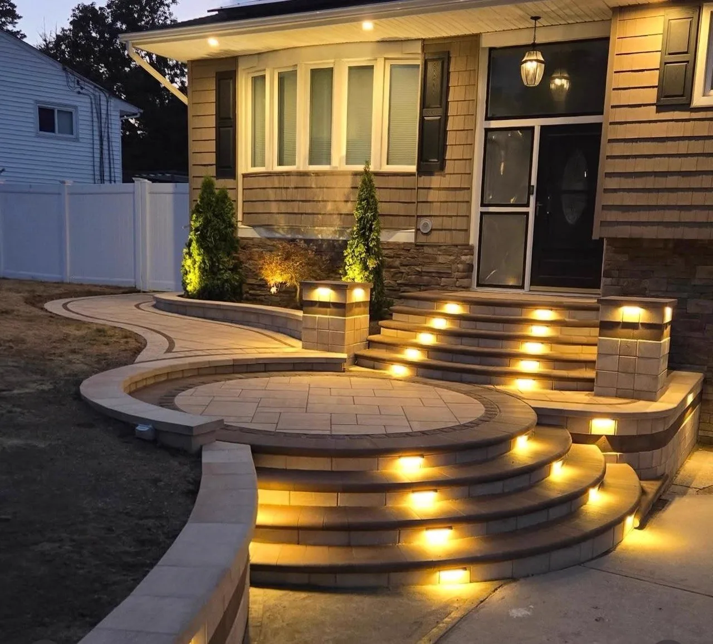
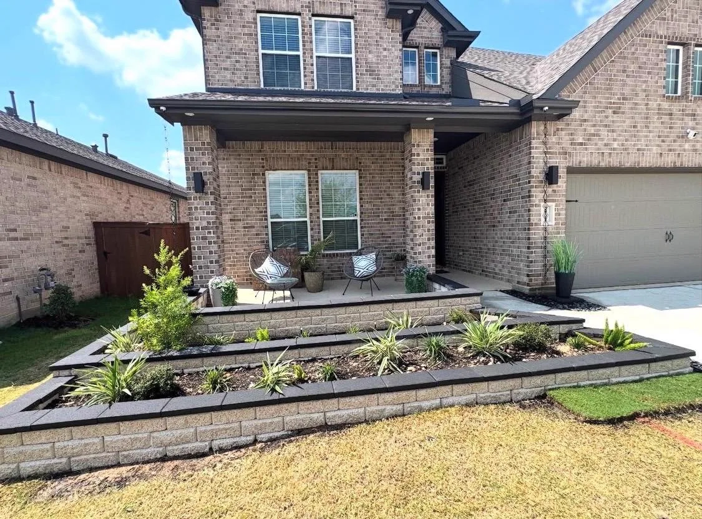
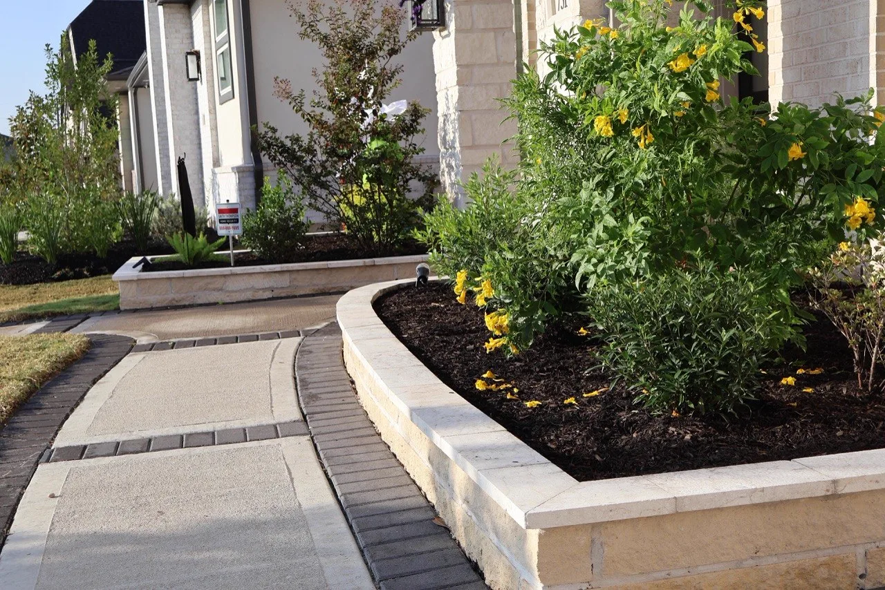
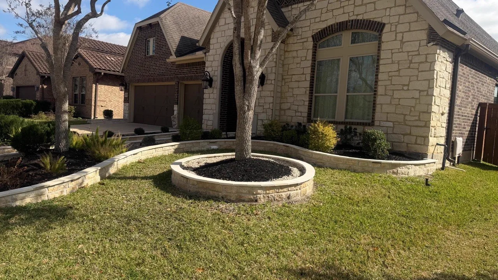
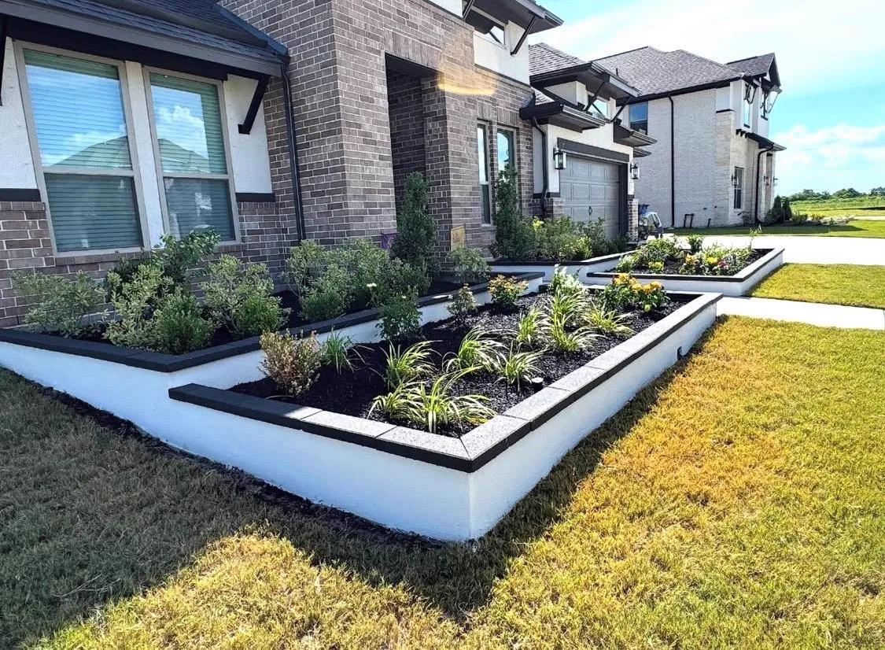
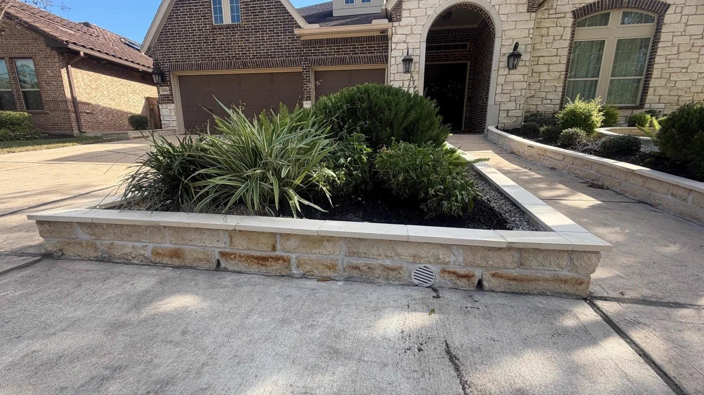
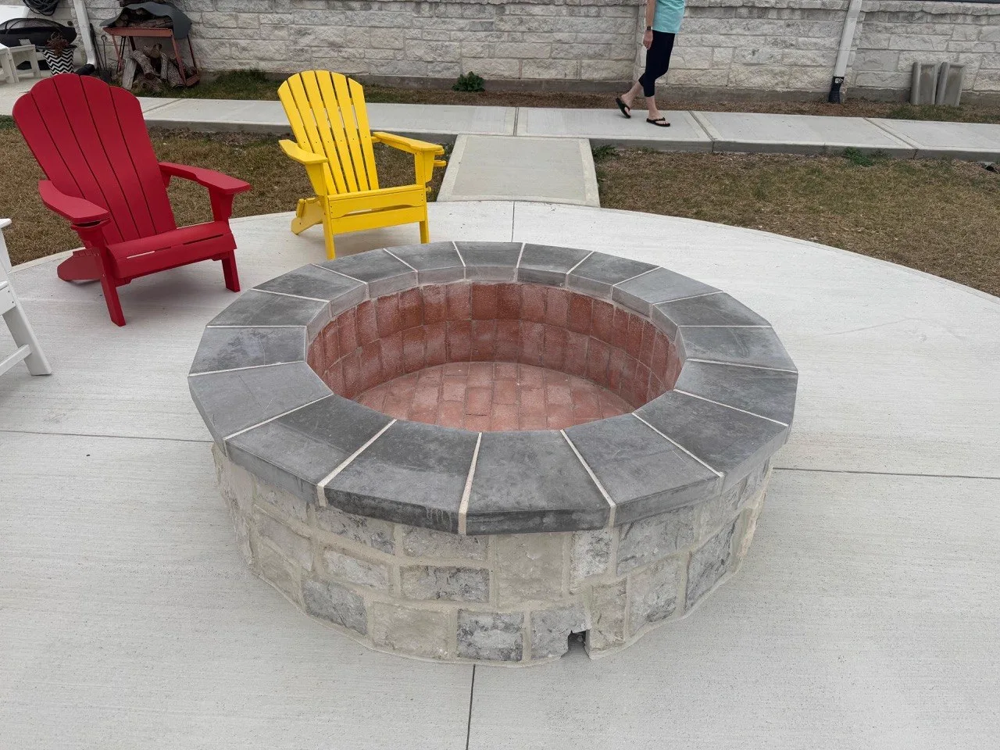

Craftsmanship That Lasts Generations
Custom Stonework & Masonry in Houston, TX
- Built for Texas Weather
- Insured
- Free Consultation
Houston's Trusted Custom Stonework Contractor
Natural stone adds permanence, texture, and character that no other material can match. Longhorn Hardscape & Construction designs and installs custom stonework throughout Houston, Missouri City, Sugar Land, Katy, and Pearland — including stone retaining walls, accent columns, garden borders, stone veneer facades, and decorative steps. We source premium natural stone and travertine to complement your home's architecture. Every project starts with a free design consultation and prompt estimate.

Custom Stonework Options We Build in Houston
Retaining Walls
Engineered stone retaining walls that manage grade changes, prevent erosion, and add clean definition to your landscape.
Stone Columns & Pillars
Freestanding or gate-flanking stone columns that add architectural weight and curb appeal to any property.
Stone Veneer Accents
Thin stone veneer applied to existing walls, columns, or outdoor kitchen facades for a premium natural look.
Garden & Flower Bed Borders
Custom stone edging and raised garden bed walls — precise, clean, and built to frame your landscaping.
Flagstone Paths & Steps
Natural flagstone walkways and step installations that connect your outdoor spaces with timeless style.
Seating Walls
Low stone walls built around fire pits, pools, and patios that serve double duty as permanent seating and visual borders.
Custom Stonework Projects in Houston, TX
Natural stone, retaining walls, and decorative stonework across Greater Houston.






Custom Stonework FAQs — Houston
We work with natural flagstone, travertine, limestone, river rock, cultured stone, and stacked stone veneer — selected based on your project, budget, and home's existing aesthetic. We'll bring samples to your consultation so you can see and feel the materials before committing.
Retaining walls over a certain height (typically 4 feet) require a building permit in Houston and most surrounding municipalities. We assess your specific project and handle all permitting as part of your build.
Natural stone is one of the most durable materials available — properly installed stonework can last 50+ years in Texas. Key factors are proper base preparation, drainage, and mortar selection for Houston's heat and humidity cycles.
Yes. Matching existing stone, brick, or stucco is a common request. We source stone in a wide range of colors and textures and will present options that complement your home's current materials before any work begins.
Yes. Longhorn Hardscape & Construction is fully insured in Texas for all stonework, masonry, and hardscape installations.
Ready for a Free Custom Stonework Estimate?
Contact us today — we'll come out, assess your space, and give you a detailed estimate at no charge.